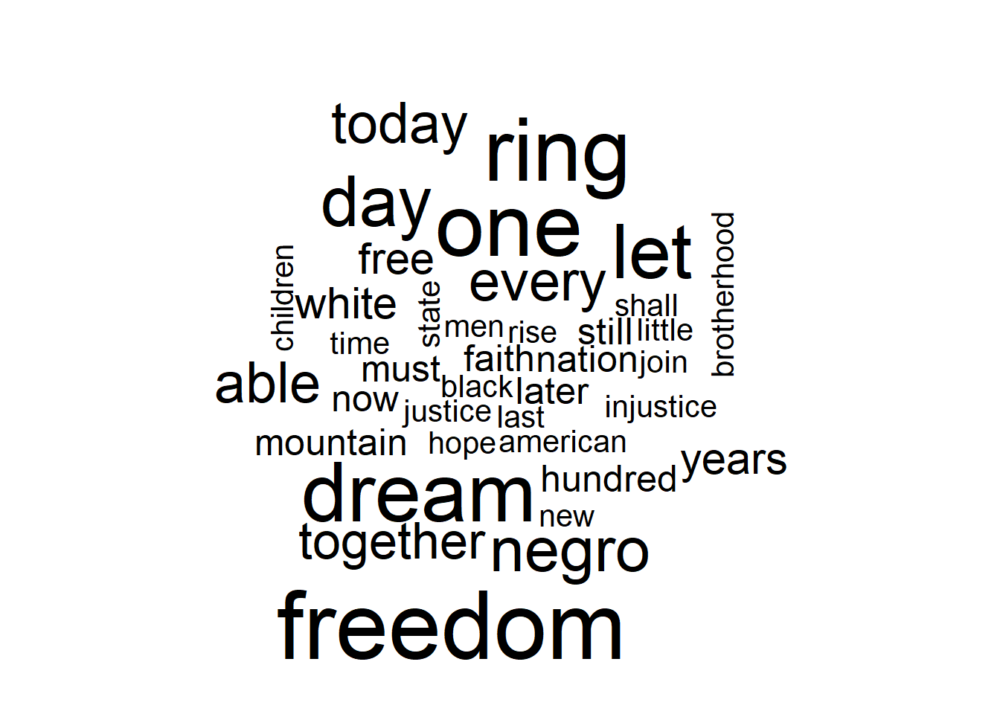
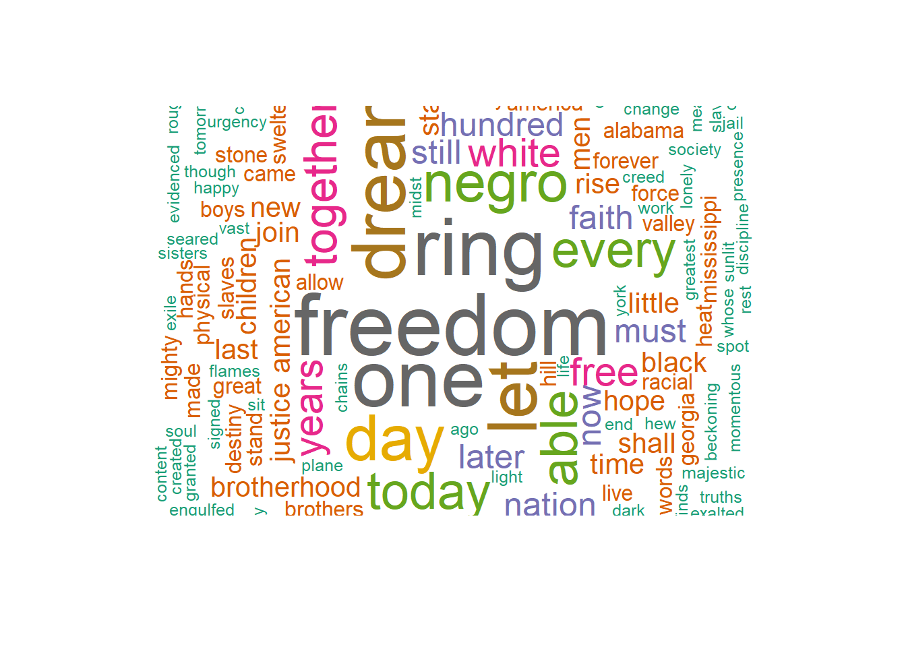

# Knowledge Mining: Text mining
# File: Lab_textmining01.R
# Theme: Download text data from web and create wordcloud
# Data: MLK speech
# Install the easypackages package
#install.packages(c("easypackages","XML","wordcloud","RColorBrewer","NLP","tm","quanteda","quanteda.textstats"))
library(easypackages)Warning: package 'easypackages' was built under R version 4.2.3libraries("XML","wordcloud","RColorBrewer","NLP","tm","quanteda","quanteda.textstats")Loading required package: XMLWarning: package 'XML' was built under R version 4.2.3Loading required package: wordcloudWarning: package 'wordcloud' was built under R version 4.2.3Loading required package: RColorBrewerLoading required package: NLPLoading required package: tmWarning: package 'tm' was built under R version 4.2.3Loading required package: quantedaWarning: package 'quanteda' was built under R version 4.2.3Package version: 3.2.4
Unicode version: 13.0
ICU version: 69.1Parallel computing: 8 of 8 threads used.See https://quanteda.io for tutorials and examples.
Attaching package: 'quanteda'The following object is masked from 'package:tm':
stopwordsThe following objects are masked from 'package:NLP':
meta, meta<-Loading required package: quanteda.textstatsWarning: package 'quanteda.textstats' was built under R version 4.2.3All packages loaded successfully# Download text data from website
mlk_speech <-URLencode("http://www.analytictech.com/mb021/mlk.htm")
# use htmlTreeParse function to read and parse paragraphs
doc.html<- htmlTreeParse(mlk_speech, useInternal=TRUE)
mlk <- unlist(xpathApply(doc.html, '//p', xmlValue))
head(mlk, 3)[1] "I am happy to join with you today in what will go down in\r\nhistory as the greatest demonstration for freedom in the history\r\nof our nation. "
[2] "Five score years ago a great American in whose symbolic shadow\r\nwe stand today signed the Emancipation Proclamation. This\r\nmomentous decree came as a great beckoning light of hope to\r\nmillions of Negro slaves who had been seared in the flames of\r\nwithering injustice. It came as a joyous daybreak to end the long\r\nnight of their captivity. "
[3] "But one hundred years later the Negro is still not free. One\r\nhundred years later the life of the Negro is still sadly crippled\r\nby the manacles of segregation and the chains of discrimination. " words.vec <- VectorSource(mlk)
# Check the class of words.vec
class(words.vec)[1] "VectorSource" "SimpleSource" "Source" # Create Corpus object for preprocessing
words.corpus <- Corpus(words.vec)
inspect(words.corpus)<<SimpleCorpus>>
Metadata: corpus specific: 1, document level (indexed): 0
Content: documents: 26
[1] I am happy to join with you today in what will go down in\r\nhistory as the greatest demonstration for freedom in the history\r\nof our nation.
[2] Five score years ago a great American in whose symbolic shadow\r\nwe stand today signed the Emancipation Proclamation. This\r\nmomentous decree came as a great beckoning light of hope to\r\nmillions of Negro slaves who had been seared in the flames of\r\nwithering injustice. It came as a joyous daybreak to end the long\r\nnight of their captivity.
[3] But one hundred years later the Negro is still not free. One\r\nhundred years later the life of the Negro is still sadly crippled\r\nby the manacles of segregation and the chains of discrimination.
[4] One hundred years later the Negro lives on a lonely island of\r\npoverty in the midst of a vast ocean of material prosperity.
[5] One hundred years later the Negro is still languishing in the\r\ncomers of American society and finds himself in exile in his own\r\nland.
[6] We all have come to this hallowed spot to remind America of\r\nthe fierce urgency of now. Now is the time to rise from the dark\r\nand desolate valley of segregation to the sunlit path of racial\r\njustice. Now is the time to change racial injustice to the solid\r\nrock of brotherhood. Now is the time to make justice ring out for\r\nall of God's children.
[7] There will be neither rest nor tranquility in America until\r\nthe Negro is granted citizenship rights.
[8] We must forever conduct our struggle on the high plane of\r\ndignity and discipline. We must not allow our creative protest to\r\ndegenerate into physical violence. Again and again we must rise\r\nto the majestic heights of meeting physical force with soul\r\nforce.
[9] And the marvelous new militarism which has engulfed the Negro\r\ncommunity must not lead us to a distrust of all white people, for\r\nmany of our white brothers have evidenced by their presence here\r\ntoday that they have come to realize that their destiny is part\r\nof our destiny.
[10] So even though we face the difficulties of today and tomorrow\r\nI still have a dream. It is a dream deeply rooted in the American\r\ndream.
[11] I have a dream that one day this nation will rise up and live\r\nout the true meaning of its creed: 'We hold these truths to be\r\nself-evident; that all men are created equal."
[12] I have a dream that one day on the red hills of Georgia the\r\nsons of former slaves and the sons of former slave owners will be\r\nable to sit together at the table of brotherhood.
[13] I have a dream that one day even the state of Mississippi, a\r\nstate sweltering with the heat of injustice, sweltering with the\r\nheat of oppression, will be transformed into an oasis of freedom\r\nand justice.
[14] I have a dream that little children will one day live in a\r\nnation where they will not be judged by the color of their skin\r\nbut by the content of their character.
[15] I have a dream today.
[16] I have a dream that one day down in Alabama, with its vicious\r\nracists, with its Governor having his lips dripping with the\r\nwords of interposition and nullification, one day right there in\r\nAlabama little black boys and black girls will be able to join\r\nhands with little white boys and white girls as sisters and\r\nbrothers.
[17] I have a dream today.
[18] I have a dream that one day every valley shall be exalted,\r\nevery hill and mountain shall be made low, the rough places\r\nplains, and the crooked places will be made straight, and before\r\nthe Lord will be revealed, and all flesh shall see it together.
[19] This is our hope. This is the faith that I go back to the\r\nmount with. With this faith we will be able to hew out of the\r\nmountain of despair a stone of hope. With this faith we will be\r\nable to transform the genuine discords of our nation into a\r\nbeautiful symphony of brotherhood. With this faith we will be\r\nable to work together, pray together; to struggle together, to go\r\nto jail together, to stand up for freedom forever, )mowing that\r\nwe will be free one day.
[20] And I say to you today my friends, let freedom ring. From the\r\nprodigious hilltops of New Hampshire, let freedom ring. From the\r\nmighty mountains of New York, let freedom ring. From the mighty\r\nAlleghenies of Pennsylvania!
[21] Let freedom ring from the snow capped Rockies of Colorado!
[22] Let freedom ring from the curvaceous slopes of California!
[23] But not only there; let freedom ring from the Stone Mountain\r\nof Georgia!
[24] Let freedom ring from Lookout Mountain in Tennessee!
[25] Let freedom ring from every hill and molehill in Mississippi.\r\nFrom every mountainside, let freedom ring.
[26] And when this happens, when we allow freedom to ring, when we\r\nlet it ring from every village and hamlet, from every state and\r\nevery city, we will be able to speed up that day when all of\r\nGod's children, black men and white men, Jews and Gentiles,\r\nProtestants and Catholics, will be able to join hands and sing in\r\nthe words of the old Negro spiritual, "Free at last! Free at\r\nlast! Thank God almighty, we're free at last!" # Turn all words to lower case
words.corpus <- tm_map(words.corpus, content_transformer(tolower))Warning in tm_map.SimpleCorpus(words.corpus, content_transformer(tolower)):
transformation drops documents# Remove punctuations, numbers
words.corpus <- tm_map(words.corpus, removePunctuation)Warning in tm_map.SimpleCorpus(words.corpus, removePunctuation): transformation
drops documentswords.corpus <- tm_map(words.corpus, removeNumbers)Warning in tm_map.SimpleCorpus(words.corpus, removeNumbers): transformation
drops documents# How about stopwords, then uniform bag of words created
words.corpus <- tm_map(words.corpus, removeWords, stopwords("english"))Warning in tm_map.SimpleCorpus(words.corpus, removeWords, stopwords("english")):
transformation drops documents# Create Term Document Matric
tdm <- TermDocumentMatrix(words.corpus)
inspect(tdm)<<TermDocumentMatrix (terms: 260, documents: 26)>>
Non-/sparse entries: 383/6377
Sparsity : 94%
Maximal term length: 14
Weighting : term frequency (tf)
Sample :
Docs
Terms 16 18 19 2 20 26 3 6 8 9
able 1 0 3 0 0 2 0 0 0 0
day 2 1 1 0 0 1 0 0 0 0
dream 1 1 0 0 0 0 0 0 0 0
every 0 2 0 0 0 3 0 0 0 0
freedom 0 0 1 0 3 1 0 0 0 0
let 0 0 0 0 3 1 0 0 0 0
negro 0 0 0 1 0 1 2 0 0 1
one 2 1 1 0 0 0 2 0 0 0
ring 0 0 0 0 3 2 0 1 0 0
today 0 0 0 1 1 0 0 0 0 1m <- as.matrix(tdm)
wordCounts <- rowSums(m)
wordCounts <- sort(wordCounts, decreasing=TRUE)
head(wordCounts)freedom one ring dream let day
13 12 12 11 10 9 # Create Wordcloud
cloudFrame<-data.frame(word=names(wordCounts),freq=wordCounts)
set.seed(1234)
wordcloud(cloudFrame$word,cloudFrame$freq)
wordcloud(names(wordCounts),wordCounts, min.freq=1,random.order=FALSE, max.words=200,scale=c(4,.5), rot.per=0.35,colors=brewer.pal(8,"Dark2"))Warning in wordcloud(names(wordCounts), wordCounts, min.freq = 1, random.order =
FALSE, : interposition could not be fit on page. It will not be plotted.Warning in wordcloud(names(wordCounts), wordCounts, min.freq = 1, random.order =
FALSE, : genuine could not be fit on page. It will not be plotted.Warning in wordcloud(names(wordCounts), wordCounts, min.freq = 1, random.order =
FALSE, : mount could not be fit on page. It will not be plotted.Warning in wordcloud(names(wordCounts), wordCounts, min.freq = 1, random.order =
FALSE, : symphony could not be fit on page. It will not be plotted.Warning in wordcloud(names(wordCounts), wordCounts, min.freq = 1, random.order =
FALSE, : transform could not be fit on page. It will not be plotted.Warning in wordcloud(names(wordCounts), wordCounts, min.freq = 1, random.order =
FALSE, : friends could not be fit on page. It will not be plotted.Warning in wordcloud(names(wordCounts), wordCounts, min.freq = 1, random.order =
FALSE, : hampshire could not be fit on page. It will not be plotted.Warning in wordcloud(names(wordCounts), wordCounts, min.freq = 1, random.order =
FALSE, : mountains could not be fit on page. It will not be plotted.Warning in wordcloud(names(wordCounts), wordCounts, min.freq = 1, random.order =
FALSE, : pennsylvania could not be fit on page. It will not be plotted.Warning in wordcloud(names(wordCounts), wordCounts, min.freq = 1, random.order =
FALSE, : prodigious could not be fit on page. It will not be plotted.Warning in wordcloud(names(wordCounts), wordCounts, min.freq = 1, random.order =
FALSE, : california could not be fit on page. It will not be plotted.Warning in wordcloud(names(wordCounts), wordCounts, min.freq = 1, random.order =
FALSE, : curvaceous could not be fit on page. It will not be plotted.Warning in wordcloud(names(wordCounts), wordCounts, min.freq = 1, random.order =
FALSE, : slopes could not be fit on page. It will not be plotted.Warning in wordcloud(names(wordCounts), wordCounts, min.freq = 1, random.order =
FALSE, : molehill could not be fit on page. It will not be plotted.Warning in wordcloud(names(wordCounts), wordCounts, min.freq = 1, random.order =
FALSE, : catholics could not be fit on page. It will not be plotted.Warning in wordcloud(names(wordCounts), wordCounts, min.freq = 1, random.order =
FALSE, : happens could not be fit on page. It will not be plotted.Warning in wordcloud(names(wordCounts), wordCounts, min.freq = 1, random.order =
FALSE, : jews could not be fit on page. It will not be plotted.Warning in wordcloud(names(wordCounts), wordCounts, min.freq = 1, random.order =
FALSE, : protestants could not be fit on page. It will not be plotted.Warning in wordcloud(names(wordCounts), wordCounts, min.freq = 1, random.order =
FALSE, : thank could not be fit on page. It will not be plotted.Warning in wordcloud(names(wordCounts), wordCounts, min.freq = 1, random.order =
FALSE, : village could not be fit on page. It will not be plotted.
# N-gram with two to three words
textstat_collocations(mlk, size = 2:3) collocation count count_nested length lambda z
1 will be 12 12 2 6.18006777 8.52344174
2 freedom ring 9 9 2 6.16204416 7.86093251
3 i have 8 8 2 5.79950409 7.72674740
4 have a 9 9 2 5.30708831 7.60099495
5 dream that 6 6 2 5.58442352 7.07713450
6 let freedom 9 9 2 7.01188170 7.02799330
7 one day 8 8 2 6.90192349 6.87515367
8 a dream 10 10 2 6.25575004 6.75194436
9 that one 5 5 2 5.10594547 6.58004714
10 ring from 6 6 2 7.73858495 6.34302115
11 we will 5 5 2 3.86081718 6.15370386
12 negro is 4 4 2 4.65396035 6.11597271
13 from every 4 4 2 5.11785291 5.94481579
14 free at 3 3 2 7.12331459 5.59608371
15 with this 3 3 2 4.53006624 5.45220051
16 faith we 3 3 2 5.65068819 5.36947278
17 this faith 3 3 2 5.65068819 5.36947278
18 from the 7 7 2 3.08341547 5.30363525
19 must not 2 2 2 5.42620788 5.20460024
20 is still 3 3 2 5.37989735 5.19780340
21 our nation 2 2 2 4.97170545 5.01431149
22 hundred years 4 4 2 8.47324130 4.98413645
23 years later 4 4 2 8.47324130 4.98413645
24 we must 3 3 2 5.07381420 4.97383211
25 the negro 6 6 2 3.68934326 4.86196261
26 when we 2 2 2 4.65902686 4.81929021
27 at last 3 3 2 8.22318001 4.78477488
28 be able 7 7 2 7.12435112 4.76029764
29 dream today 2 2 2 3.86677203 4.56840706
30 with its 2 2 2 4.93219948 4.55360715
31 god's children 2 2 2 7.88795934 4.50342390
32 join hands 2 2 2 7.88795934 4.50342390
33 for freedom 2 2 2 4.22651634 4.48456912
34 came as 2 2 2 7.37588215 4.40694725
35 one hundred 4 4 2 6.72982407 4.39835771
36 able to 7 7 2 6.39243238 4.32365147
37 in the 6 6 2 2.17334653 4.23621778
38 shall be 2 2 2 4.50299743 4.22317970
39 of our 4 4 2 3.05434175 4.19053424
40 now is 3 3 2 6.47977386 4.17865188
41 this is 2 2 2 3.31514248 4.14434519
42 as a 2 2 2 3.79901427 4.10034493
43 every hill 2 2 2 6.58366067 4.09636748
44 sweltering with 2 2 2 6.58366067 4.09636748
45 you today 2 2 2 6.58366067 4.09636748
46 have come 2 2 2 5.93072831 3.75354799
47 of their 3 3 2 3.11909113 3.70546496
48 and white 2 2 2 3.07448132 3.60774987
49 by the 3 3 2 3.54339573 3.59126502
50 is the 4 4 2 2.19722458 3.57802740
51 time to 3 3 2 5.44370637 3.56663099
52 be made 2 2 2 5.60288199 3.56485743
53 down in 2 2 2 5.53491835 3.52478998
54 in alabama 2 2 2 5.53491835 3.52478998
55 to join 3 3 2 5.31969109 3.48898372
56 a great 2 2 2 5.35416110 3.41693189
57 boys and 2 2 2 5.30023860 3.38442936
58 hill and 2 2 2 5.30023860 3.38442936
59 later the 4 4 2 4.91465823 3.28099274
60 come to 2 2 2 5.06556144 3.24149604
61 of hope 2 2 2 3.27349691 3.13681123
62 of new 2 2 2 3.27349691 3.13681123
63 of brotherhood 3 3 2 4.73118685 3.11387202
64 on the 2 2 2 3.18731502 3.05651338
65 mountain of 2 2 2 2.76134150 3.04496971
66 the time 3 3 2 4.62239955 3.04364353
67 heat of 2 2 2 4.37343722 2.80997063
68 of former 2 2 2 4.37343722 2.80997063
69 of georgia 2 2 2 4.37343722 2.80997063
70 of god's 2 2 2 4.37343722 2.80997063
71 of segregation 2 2 2 4.37343722 2.80997063
72 sons of 2 2 2 4.37343722 2.80997063
73 words of 2 2 2 4.37343722 2.80997063
74 with the 3 3 2 1.79939863 2.76173771
75 the heat 2 2 2 4.26669595 2.74251867
76 the mighty 2 2 2 4.26669595 2.74251867
77 the sons 2 2 2 4.26669595 2.74251867
78 the words 2 2 2 4.26669595 2.74251867
79 all of 2 2 2 2.17088994 2.70389360
80 and the 4 4 2 1.03334279 1.93104709
81 to the 4 4 2 0.94890804 1.78367373
82 the time to 3 0 3 3.26606636 1.13032087
83 i have a 8 0 3 1.68160853 0.72439251
84 of the 4 4 2 0.34188073 0.66310057
85 be able to 7 0 3 1.70455087 0.59024096
86 have come to 2 0 3 1.31957164 0.45161399
87 all of god's 2 0 3 1.15936850 0.39431642
88 is the time 3 0 3 0.95979188 0.36001531
89 now is the 3 0 3 0.84580085 0.31720719
90 with the heat 2 0 3 0.76999175 0.28684695
91 the negro is 4 0 3 0.67536052 0.28260464
92 have a dream 9 0 3 0.58984656 0.24426851
93 of our nation 2 0 3 0.51082562 0.21746223
94 with this faith 3 0 3 0.56734869 0.20916795
95 years later the 4 0 3 0.57735438 0.19339014
96 this faith we 3 0 3 0.38052616 0.14028450
97 we will be 5 0 3 0.09967316 0.04495999
98 faith we will 3 0 3 -0.07503519 -0.03083945
99 sweltering with the 2 0 3 -0.23655401 -0.08710125
100 of god's children 2 0 3 -0.28259670 -0.09369478
101 came as a 2 0 3 -0.47356870 -0.15911139
102 negro is still 3 0 3 -0.65642674 -0.26710716
103 the heat of 2 0 3 -0.72619021 -0.28440540
104 the sons of 2 0 3 -0.72619021 -0.28440540
105 the words of 2 0 3 -0.72619021 -0.28440540
106 sons of former 2 0 3 -1.04380405 -0.32331979
107 dream that one 5 0 3 -0.85247922 -0.34520461
108 from the mighty 2 0 3 -1.05164841 -0.40368538
109 one hundred years 4 0 3 -1.25663553 -0.41832975
110 a dream that 6 0 3 -1.38415532 -0.53242854
111 let freedom ring 9 0 3 -1.60239563 -0.58922893
112 that one day 5 0 3 -1.56115267 -0.63470415
113 freedom ring from 5 0 3 -1.81950938 -0.71538178
114 later the negro 3 0 3 -2.15475846 -0.90562482
115 to join hands 2 0 3 -2.79512694 -0.92620311
116 will be able 7 0 3 -2.54461097 -0.97862289
117 free at last 3 0 3 -3.12717816 -1.00821968
118 every hill and 2 0 3 -2.78472739 -1.01433624
119 a dream today 2 0 3 -2.89970755 -1.11102196
120 ring from the 3 0 3 -2.71402483 -1.11463644
121 hundred years later 4 0 3 -3.97447602 -1.20437115
122 ring from every 2 0 3 -4.04445379 -1.60411403
123 able to join 2 0 3 -5.51680143 -2.04130446# Run the program on Winston Churchill's Finest Hour speech?
# http://www.historyplace.com/speeches/churchill-hour.htm